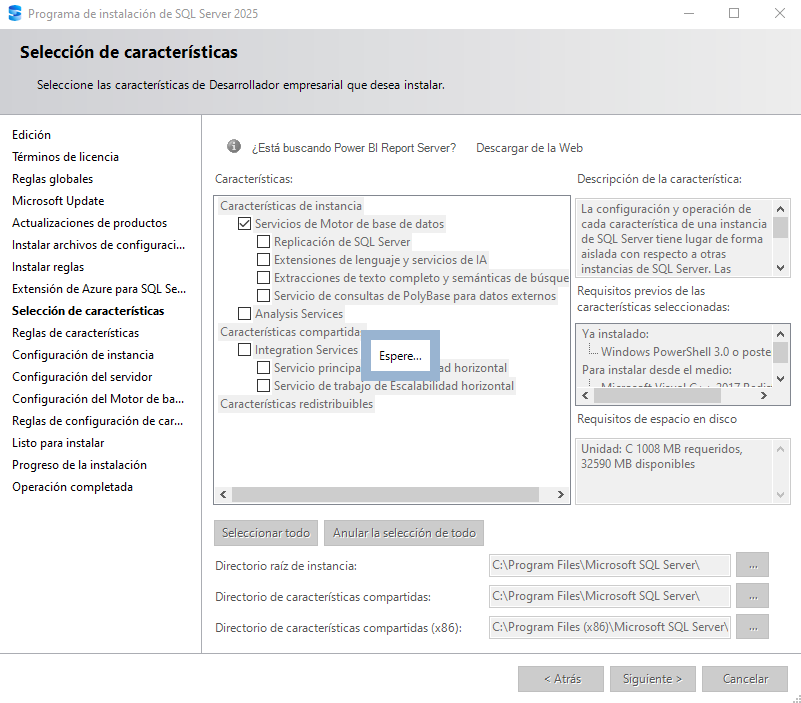
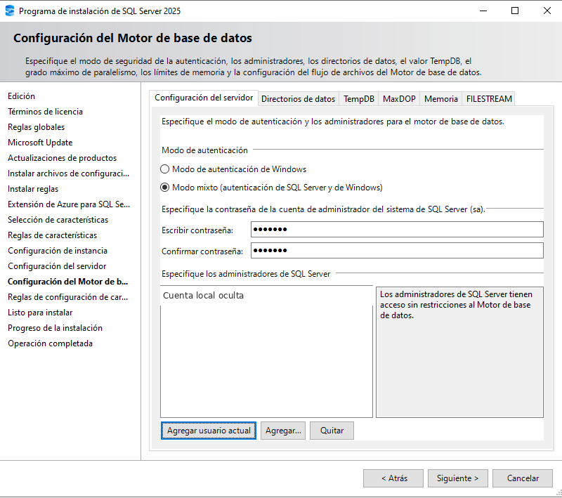
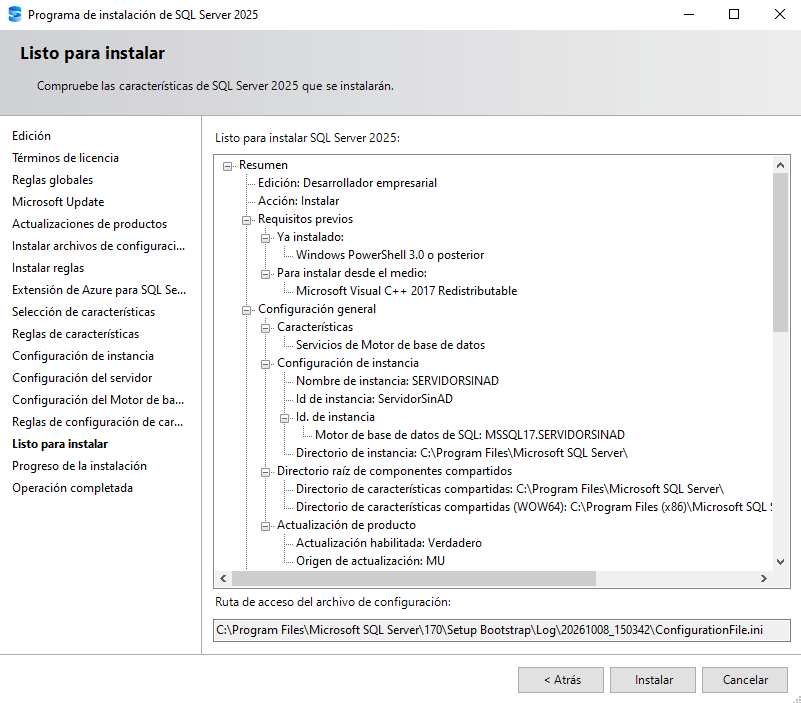

SQL Server / Instalación
Instalación de SQL Server 2025 Developer
Guía de instalación limpia de SQL Server 2025 Enterprise Developer en Windows, como servidor independiente y sin integración con Active Directory. La guía recoge las pantallas reales del asistente hasta el resumen previo a la instalación. El conjunto de capturas no incluye la ejecución ni la verificación final del motor.
Alcance y requisitos
- Producto: SQL Server 2025 Enterprise Developer.
- Tipo: instalación limpia del motor de base de datos en Windows.
- Topología: instancia independiente; el equipo no se une a un dominio de Active Directory como parte de este procedimiento.
- Uso: desarrollo y pruebas fuera de producción.
- Las cuentas de servicio, la instancia, las rutas y la autenticación se documentarán según las pantallas que aparezcan, sin asumir valores por adelantado.
Procedimiento
1. Abrir la instalación personalizada
Ejecuta el iniciador de SQL Server 2025. En la primera pantalla aparecen Basic, Custom y Download Media; en la captura está resaltada Custom. Selecciónala para abrir el asistente detallado y revisar la configuración antes de instalar. No elijas Basic, porque esta guía requiere controlar los componentes y opciones de la instancia.
El encabezado del iniciador dice “Evaluation Edition”, pero no determina la edición que se instalará. La edición se elige en el asistente, como se muestra en el paso 6.

2. Elegir la ubicación de descarga
En Specify SQL Server media download target location, el idioma aparece como Spanish y la ruta propuesta es C:\SQL2025. La pantalla indica 8752 MB de espacio libre mínimo y un tamaño de descarga de 1311 MB. Comprueba que la unidad tenga el espacio libre indicado y que la carpeta sea la que quieres usar; cambia la ruta si lo necesitas.
Pulsa Install para iniciar la adquisición de los archivos. El encabezado aún dice “Evaluation Edition”; la edición se confirma más adelante en el asistente.

3. Esperar a que se adquieran los archivos
El iniciador muestra Downloading install package... y el estado Acquiring setup files.... Espera a que termine. La captura muestra una descarga en curso, no su finalización. La esquina inferior derecha indica la versión del iniciador 17.0.1000.7.

4. Abrir la sección de instalación
Cuando aparezca el Centro de instalación de SQL Server, selecciona Instalación en el menú de la izquierda. La pantalla capturada está en Planeamiento y muestra enlaces de requisitos, seguridad, notas de versión y documentación.

5. Iniciar una instalación independiente
En la página Instalación, selecciona Nueva instalación independiente de SQL Server o agregar características a una instalación existente. Esta es la opción mostrada para iniciar una instancia nueva, en lugar de actualizar una instalación anterior o crear un clúster.

6. Seleccionar Enterprise Developer
En Edición, el asistente ofrece elegir una edición gratuita, usar facturación de Azure o escribir una clave. En la primera captura aparece seleccionada Evaluation como valor inicial del desplegable. Cámbialo a Enterprise Developer, que es la edición elegida para esta guía.
La descripción del propio asistente indica que Developer no tiene caducidad, incluye el conjunto de características de Enterprise y se licencia para desarrollo y pruebas, no para producción. Continúa solo después de comprobar que el desplegable muestra Enterprise Developer.


7. Revisar y aceptar los términos de licencia
La siguiente pantalla identifica el producto como SQL Server 2025 Enterprise Developer Edition. Lee los términos y la declaración de privacidad. La casilla Acepto los términos de licencia y... aparece marcada en la captura; acéptalos solo si estás de acuerdo y pulsa Siguiente.

8. Esperar la comprobación de reglas globales
El asistente comprueba las reglas globales antes de seguir. En la captura aparece Comprobación de reglas en curso.... Espera a que termine y revisa el resultado antes de continuar; no cierres el asistente durante la comprobación.

9. Dejar Microsoft Update desmarcado
En esta guía, deja sin marcar Usar Microsoft Update para comprobar las actualizaciones, tal como aparece en la captura. Así el asistente no utiliza esa opción durante esta instalación; la gestión de parches se hará después, de forma controlada.
Esta casilla corresponde a Microsoft Update. La pantalla posterior registra por separado una tarea llamada Buscar actualizaciones de producto; ese estado no demuestra por sí solo que se haya descargado o instalado una actualización.

10. Revisar el estado de los archivos de configuración
En Instalar archivos de configuración, la tabla muestra Buscar actualizaciones de producto: Completado, Descargar archivos del programa de configuración: Omitido, Extraer archivos del programa de configuración: Omitido e Instalar archivos del programa de configuración: No iniciado. Conservamos esos estados exactamente como aparecen; no los interpretamos como una actualización de SQL Server instalada.
En la captura posterior, el asistente ya ha avanzado hasta Instalar reglas. La pantalla intermedia no muestra el resultado final de cada tarea, así que no damos por hecho cuáles se ejecutaron después.

11. Continuar pese a la advertencia del Firewall
El resumen indica 4 reglas correctas, 0 incumplidas, 1 advertencia y 0 omitidas. La regla Firewall de Windows es la única que muestra una advertencia. Al abrir su detalle, el asistente confirma que el Firewall está habilitado y explica que hay que abrir los puertos correspondientes para permitir el acceso remoto.
Para esta instalación puedes seguir sin cambiar nada en el Firewall. Pulsa Aceptar para cerrar el aviso y luego Siguiente. La advertencia no bloquea la instalación. Si más adelante necesitas conectar clientes desde otros equipos, se configurarán entonces el puerto de SQL Server y la regla de Firewall para ese acceso concreto; no abras puertos ahora sin necesitarlos.


12. Omitir la extensión de Azure
En Extensión de Azure para SQL Server, la casilla aparece desmarcada y los campos de Azure están inactivos. Déjala así: esta instalación es independiente y no requiere conectar SQL Server a Azure. Pulsa Siguiente.

13. Seleccionar solo el motor de base de datos
La pantalla muestra las características disponibles y, en esta captura, ninguna está seleccionada todavía. Marca Servicios de Motor de base de datos, la característica principal que proporciona el motor relacional de SQL Server. Para esta instalación limpia deja sin marcar Replication, las extensiones de lenguaje e IA, la búsqueda de texto completo, PolyBase, Analysis Services, Integration Services y las características de escalabilidad horizontal. Añádelas solo si aparece un requisito concreto para ellas.
No pulses Seleccionar todo. Tras marcar únicamente Servicios de Motor de base de datos, pulsa Siguiente y continúa a la configuración de instancia y rutas.


14. Configurar una instancia con nombre
En Configuración de instancia, elige Instancia con nombre y comprueba que tanto el nombre de instancia como el identificador muestran ServidorSinAD. La ruta propuesta incluye MSSQL17.ServidorSinAD. Revisa los valores antes de continuar.

15. Revisar las cuentas de servicio
En la pestaña Cuentas de servicio, la captura muestra el Agente SQL Server con inicio Manual, el Motor de base de datos con inicio Automático y SQL Server Browser Deshabilitado. Los nombres de las cuentas aparecen truncados. La opción para conceder el privilegio de mantenimiento de volúmenes está desmarcada. Revisa estos valores antes de continuar.

16. Añadir al menos una cuenta administradora
El asistente no permite continuar si la lista de administradores de SQL Server está vacía. Cierra el aviso de validación y añade al menos una cuenta que deba administrar el motor.

En esta configuración se eligió el modo mixto y se añadió la cuenta local actual como administradora. Los campos de contraseña aparecen enmascarados. La copia publicada oculta el identificador del equipo; no compartas ni incluyas la contraseña en la documentación.

17. Confirmar autenticación y administradores del motor
En la página Configuración del motor, confirma el modo de autenticación seleccionado y que la lista de administradores incluya la cuenta elegida. En las capturas, el modo mixto está seleccionado y la cuenta local aparece en la lista. Las contraseñas se muestran enmascaradas y no se guardan en esta guía.
18. Esperar la comprobación de reglas
Espera a que termine la comprobación de reglas de configuración de características y revisa el resultado antes de continuar. La captura disponible muestra la comprobación en curso, no su resultado final.

19. Revisar el resumen antes de instalar
En Listo para instalar, el resumen muestra la edición Desarrollador empresarial, la acción Instalar, Servicios de Motor de base de datos y la instancia SERVIDORSINAD. Revisa el resumen antes de pulsar Instalar.

El resumen indica Actualización habilitada: Verdadero y Origen de actualización: MU, aunque la casilla de Microsoft Update se dejó desmarcada en un paso anterior. Se documentan ambos estados observados; esta pantalla no demuestra que se descargara o instalara una actualización.